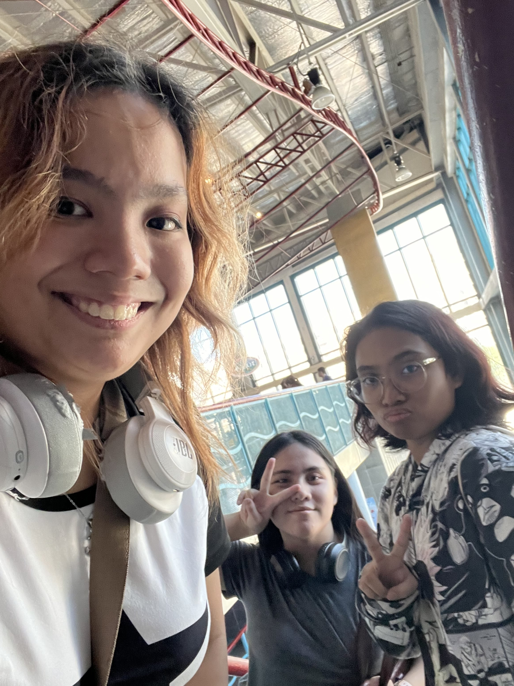
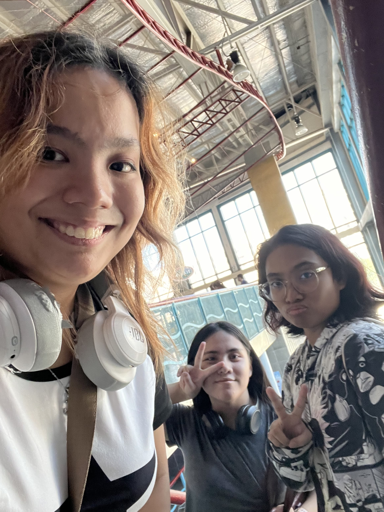
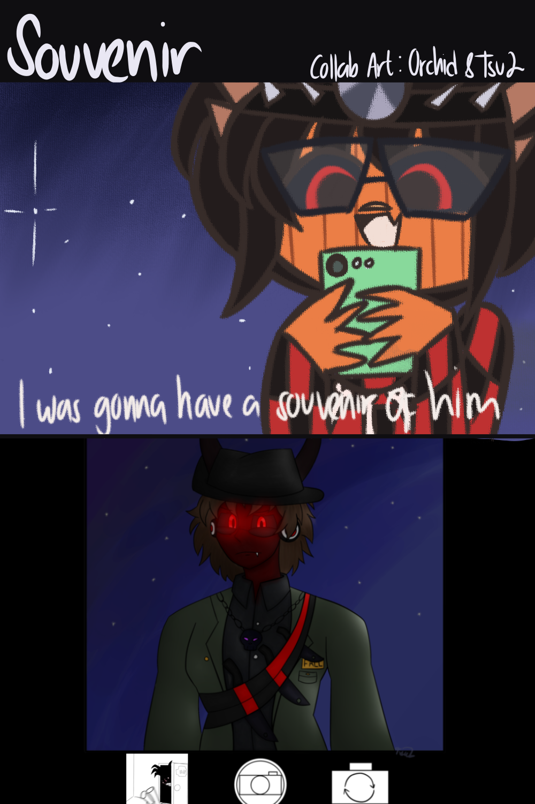
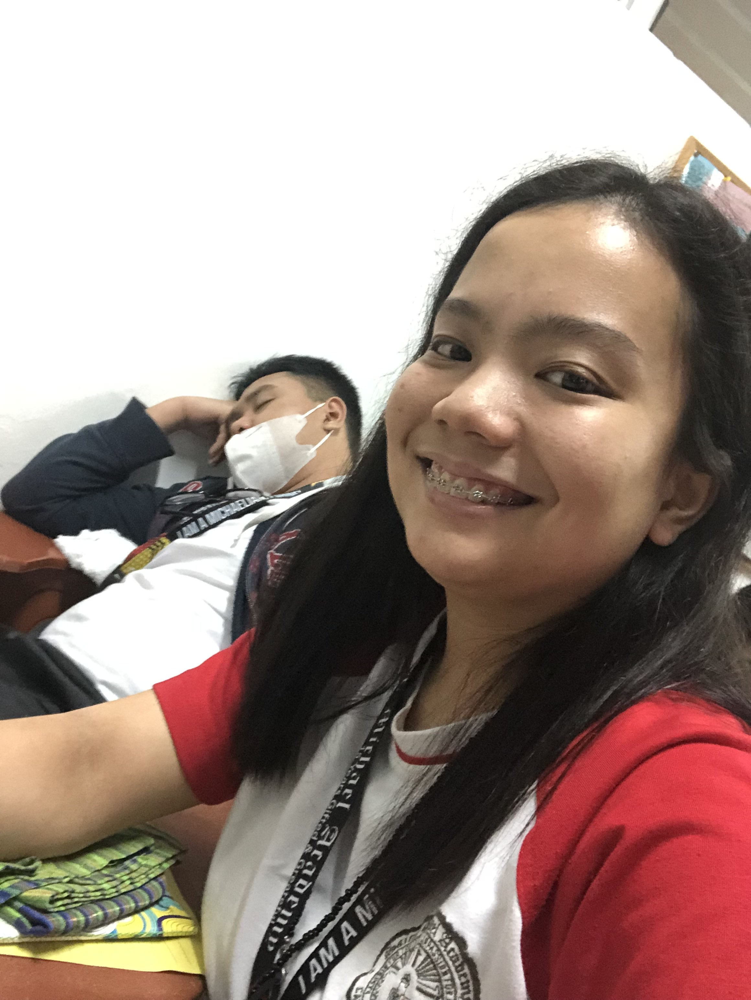
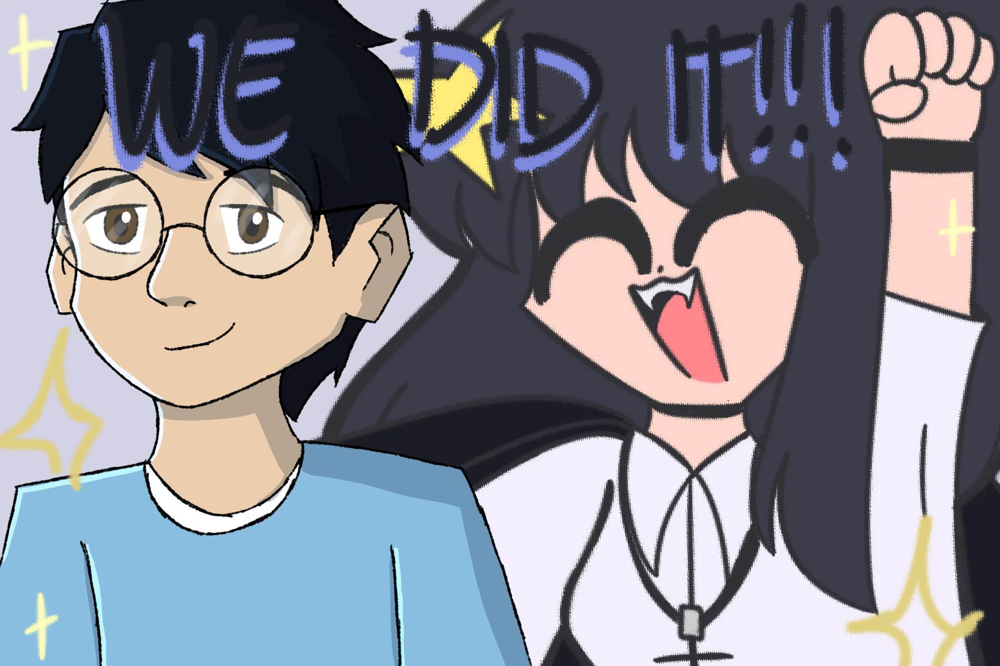
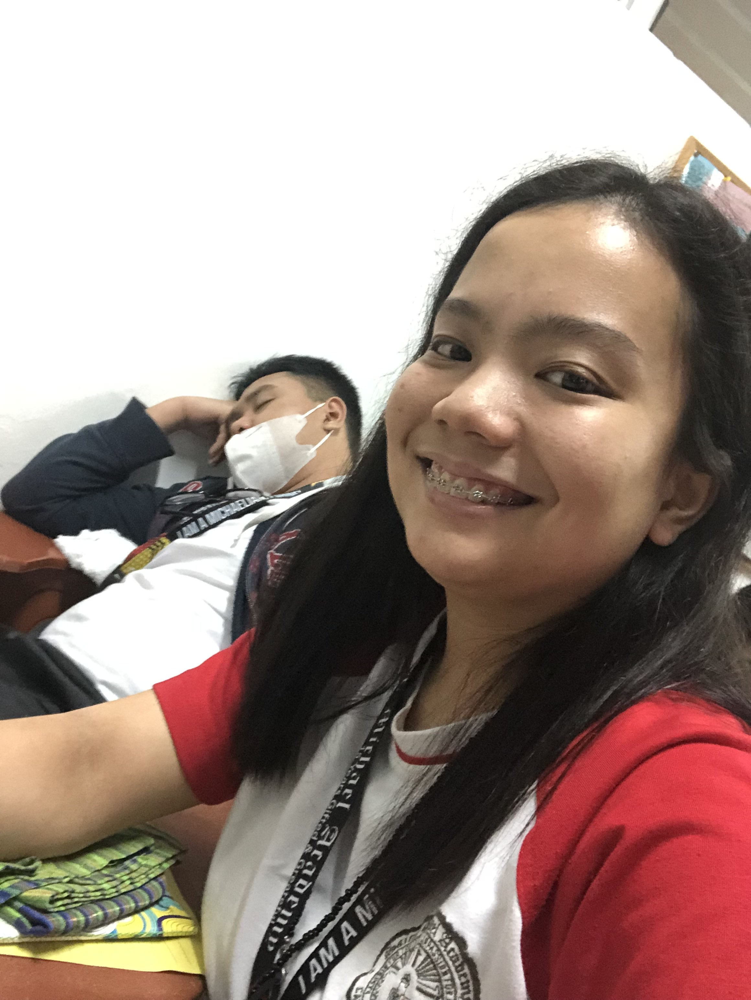
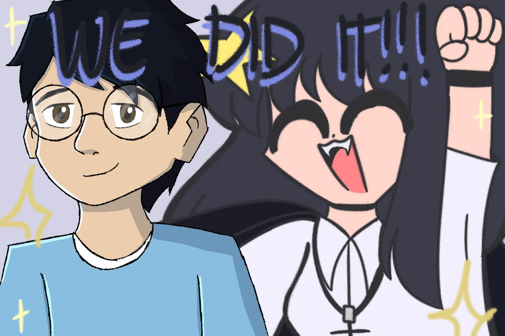

Therese
She is my childhood bestfriend when I was grade 6. We always hang out together inside the service after school. She is funny and caring. She shares the same interest with me! Such as drawing, and being weird. We also play online games together. I remember our characters getting married, which is the best moment hehehe! Especially roleplaying. We always hang out whatever we want to. She is always there for me whenever I feel down. She also talks about her problems and I am always there for her. This is why she is my best friend ever! Even though she is staying at the US...

 

Marlon
My online best friend! He always talk to me whenever he wants to. I met him through discord, and he's the closest friend I've ever talk to hehe. We also draw and roleplay. We also made our characters date, and get married. For some reason, it reminded me when me and my childhood best friend when we made our characters get married. So, I find it really coincidential. Overall, he is one of my close friends I always talk to, alongside with Therese.

Jake
One of my best friends since Grade 9! He can draw and animate. I always hang out with him because he is awesome! Ah yes, I remember those moments where we always goof around. Whenever the name came into my mind, I think about the memories we did. We always pair up during activities. I even remember one time when I took a picture of him sleeping, and him taking a picture of a boy hehehehe! Even though were far away, we still keep in touch together.
.jpg) 


